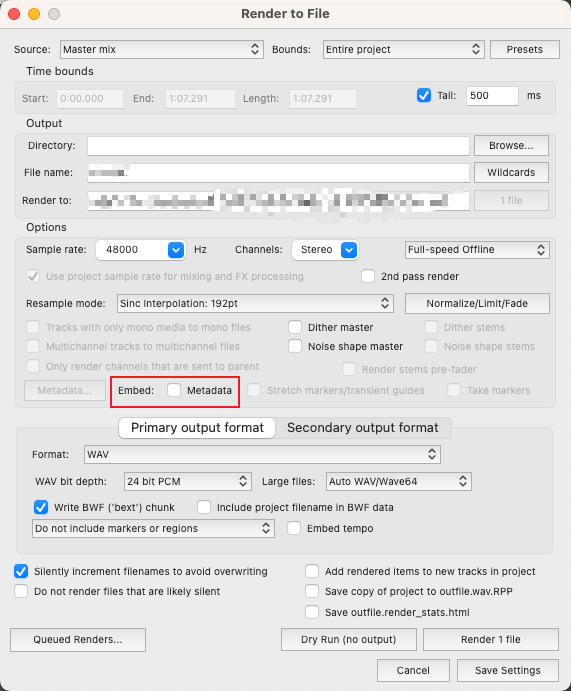
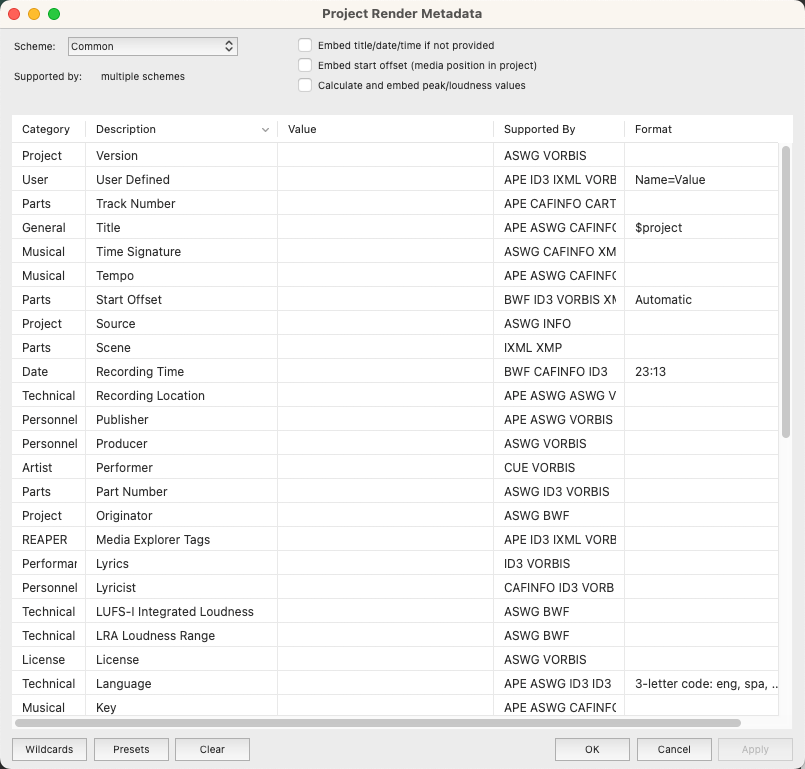

音频元数据Metadata
什么是音频元数据（Metadata）
音频元数据（Metadata）用于描述音频文件的信息，这些元数据通常嵌入在音频文件中或与音频文件一起存储，以帮助使用者识别、组织和管理音频内容。数据的种类主要取决于文件的格式。
常见Metadata类型
- 标题和艺术家信息
- 专辑信息
- 时长
- 音频格式
- 比特率
- 采样率
- 通道数：例如单声道（Mono）、立体声道（Stereo）
- 风格和流派
- 歌词
- 评论和标签
音频元数据的标准格式
Metadata通常以一定的标准格式进行存储，例如ID3标签、APE标签或Vorbis注释等。并且不是所有的格式的音频文件都可以存储Metadata。
能储存metadata的音频文件格式有：
- .wav
- .mp3
- .ogg
- .wma
- .flac
- .aac
如何修改音频文件中的Metadata
音频编辑器导出设置（Reaper）
许多编辑器和DAW在导出音频文件是能对文件的Metadata进行设置，本文以Reaper为例。
依次File->Render..打开reaper导出文件的界面，如图：
 默认Metadata选项是关闭的，我们只需要打开即可对元数据进行编辑。

Python mutagen库
安装方式
python3 -m pip install mutagen官方文档
https://mutagen.readthedocs.io/en/latest/
使用方法
以修改mp3文件的标题和艺术家为例子:
# 导入mutagen.File类
from mutagen import File
# 打开音频文件
audio = File("example.mp3")
# 打印原始的元数据
print(audio.pprint())
# 修改标题和艺术家标签
audio["TIT2"] = "New Title"
audio["TPE1"] = "New Artist"
# 保存修改后的文件
audio.save()
# 打印修改后的元数据
print(audio.pprint())Pyhton audio-metadata库
安装方式
pip install audio-metadata链接：https://pypi.org/project/audio-metadata/
开源地址
https://github.com/thebigmunch/audio-metadata
API Reference
https://audio-metadata.readthedocs.io/en/latest/api.html
使用方法
以修改mp3文件的标题和艺术家为例子（load和dump函数来读取和写入元数据）:
import audio_metadata
# 读取MP3文件的元数据
metadata = audio_metadata.load('sample.mp3')
# 打印原始的标题和艺术家信息
print(metadata.tags.title)
print(metadata.tags.artist)
# 修改标题和艺术家信息
metadata.tags.title = 'New Title'
metadata.tags.artist = 'New Artist'
# 写入修改后的元数据到MP3文件
audio_metadata.dump(metadata, 'sample.mp3')
# 重新读取MP3文件的元数据，验证修改是否成功
metadata = audio_metadata.load('sample.mp3')
# 打印修改后的标题和艺术家信息
print(metadata.tags.title)
print(metadata.tags.artist)
FFmpeg
官方文档
https://ffmpeg.org/
修改Metadata
修改方式是使用-metadata
指令，修改对应的键值。例如修改mp3文件的标题和艺术家：
ffmpeg -i input.mp3 -metadata title="New Title" -metadata artist="New Artist" output.mp3这个命令会将input.mp3文件的标题和艺术家修改为New Title和New Artist，并输出一个新的文件output.mp3。请注意，这个命令会重新编码音频流，可能会导致音质损失。如果您想要保留原始的音频流，可以使用-c:a copy选项，告诉FFmpeg不要对音频流进行编码，只修改metadata。
ffmpeg -i input.mp3 -c:a copy -metadata title="New Title" -metadata artist="New Artist" output.mp3